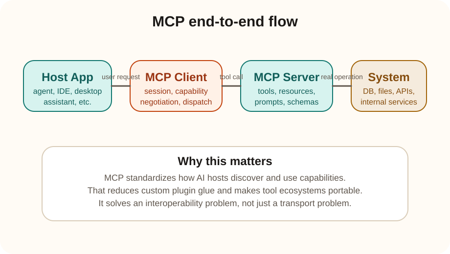

Systems track
MCP server end to end
MCP is a standard way for an AI host application to discover and use external capabilities such as tools, resources, and prompts through a structured protocol instead of a one-off custom integration.
The simplest mental model is this: MCP gives AI applications a shared tool contract, so hosts and tool providers do not need a separate bespoke plugin system for every pairing.
Core flow
Host app -> MCP client -> MCP server -> real system
What an MCP server exposes
An MCP server exposes capabilities in a structured way. In practice that usually means tools the model can call, resources it can inspect, and prompts or templates the host can retrieve.
What the host gains
The host can discover capability names, schemas, and invocation rules consistently rather than reverse-engineering many custom APIs for model-facing use.
Why it evolved
Why was MCP needed?
Before MCP
- Each AI host often invented its own plugin format and tool schema.
- Tool builders had to integrate separately with each host.
- Capability discovery and model-safe invocation were inconsistent.
After MCP
- A tool provider can expose capabilities once through a standard protocol.
- Multiple hosts can reuse the same capability surface.
- Schema-driven discovery reduces integration duplication.

1. Host opens a session
The host application connects to an MCP server through an MCP client implementation.
2. Capabilities are discovered
The host learns what tools, resources, and prompts exist and what schemas they accept.
3. The model chooses or is instructed to use a capability
This may be a file search, a CRM lookup, a database query, or a deployment action, depending on the connected server.
4. The server performs the real work
The MCP server translates the protocol-level request into an underlying filesystem call, API request, query, or internal business operation.
5. Structured results return to the host
The host can then surface those results to the model and user in a controlled way.
Concrete implementation
Standard HTTP example vs MCP example
Scenario: an AI assistant must fetch customer details from a CRM using the customer id CUST-1842.
Both approaches eventually reach the same backend information. The difference is where the integration burden sits and what the AI host can understand automatically.
Plain HTTP approach
The host or plugin author must know the exact endpoint, method, auth header, payload format, and response mapping.
POST /api/v1/customers/details HTTP/1.1
Host: crm.company.internal
Authorization: Bearer eyJ...
Content-Type: application/json
{
"customer_id": "CUST-1842",
"include_tickets": true,
"include_notes": false
}
HTTP/1.1 200 OK
Content-Type: application/json
{
"id": "CUST-1842",
"name": "Acme Retail",
"tier": "gold",
"open_tickets": 3,
"region": "west"
}
MCP approach
The host first discovers a tool and its schema, then invokes the tool through a standard protocol. The MCP server hides the raw CRM API details.
{
"method": "tools/list",
"params": {}
}
{
"tools": [
{
"name": "get_customer_profile",
"description": "Fetch CRM customer details",
"inputSchema": {
"type": "object",
"properties": {
"customer_id": { "type": "string" },
"include_tickets": { "type": "boolean" }
},
"required": ["customer_id"]
}
}
]
}
{
"method": "tools/call",
"params": {
"name": "get_customer_profile",
"arguments": {
"customer_id": "CUST-1842",
"include_tickets": true
}
}
}
{
"content": [
{
"type": "text",
"text": "Customer Acme Retail is a gold-tier account in west region with 3 open tickets."
}
]
}
Where the advantage appears
Why MCP helps in this exact example
With plain HTTP
- The AI host must already know the CRM endpoint shape or rely on a custom-written adapter.
- If another host wants the same CRM capability, that second host needs another integration.
- The model does not automatically know what arguments are allowed unless the host separately describes them.
- The raw API may expose backend-specific details the model should not care about.
With MCP
- The host can discover the tool name and input schema through a standard protocol.
- The same MCP server can be reused across multiple AI hosts.
- The model-facing interface is cleaner: get_customer_profile is easier to reason about than a raw CRM endpoint.
- The MCP server becomes the place where backend auth, endpoint mapping, and safety rules are centralized.
Very clear summary
HTTP tells you how to send a request. MCP tells an AI host what capabilities exist, how to call them safely, and how to reuse them across hosts. MCP does not replace the backend API. It standardizes the AI-facing integration layer above that API.
Refined mental model
FastAPI plus Swagger versus MCP
Your understanding is mostly right. The correction is this: MCP does not remove all client and parsing logic from the world. It centralizes the AI-facing integration into a reusable tool layer, while the backend connectivity still lives inside the MCP server or behind it.
FastAPI plus Swagger view
- You define request and response payloads clearly, and clients must follow that schema.
- If you build an AI application, a developer usually writes explicit connectivity to those APIs.
- The client decides when to call which API.
- Swagger or OpenAPI helps document and test the API, but it is not automatically an AI-native tool protocol.
MCP view
- You register tools and their schemas in a way AI hosts can discover systematically.
- The MCP server contains or delegates the backend connectivity needed to reach the underlying API or system.
- The host and model can choose tools based on discovered tool context and task needs.
- The result is an AI-native execution layer above your backend APIs.
| Point | FastAPI plus Swagger | MCP |
|---|---|---|
| Who usually decides the call? | The client application or developer-written workflow. | The AI host or agent can decide based on discovered tools and current task. |
| How is discovery handled? | Usually manual by the developer reading docs, schemas, or SDKs. | Tool discovery is part of the protocol. |
| What is the main output? | An API contract and execution endpoint. | An AI-usable capability layer with structured invocation. |
| Does backend connectivity still exist? | Yes, directly in the client or service integration code. | Yes, but usually hidden inside the MCP server or tool adapter. |
Simple mental model
Think of FastAPI plus Swagger as backend API contract plus docs. Think of MCP as an AI-facing tool layer that can sit above those APIs and make them discoverable and callable by agents.
Important correction
It is too strong to say “no need to write API clients, request builders, or response parsers.” Someone still writes that logic somewhere. MCP centralizes it so every AI host does not need to reimplement it separately.
Best-practice architecture: frontend or chat UI -> LLM host or agent -> MCP server -> FastAPI or internal services -> database or ML models. FastAPI stays the execution backend. MCP becomes the AI-native interface layer.
Multi-tool orchestration scenario
User asks: Analyze sales data and give recommendations.
In a plain API world, the developer often hardcodes a workflow such as call sales endpoint, then call summarization logic, then call recommendation engine. In an MCP-aware agent setup, the host can discover tools like get_sales_data, summarize_sales_trends, and recommend_actions, and decide the sequence dynamically based on the task.
Your “driverless car” intuition works here, with one important caveat: autonomous orchestration is only possible because the MCP tool layer was designed and registered carefully beforehand.
| Question from practice | Answer |
|---|---|
| I already built a React agent where tool descriptions let the agent choose tools, and each tool hits FastAPI. Is that not basically MCP? | It is conceptually similar, but it is usually a custom agent-tool integration inside your own stack. MCP becomes valuable when you want that tool interface to be standardized, portable, and reusable across multiple hosts instead of being tied to one agent framework. |
| So what is MCP doing differently? | MCP formalizes discovery, schemas, invocation, and capability exposure as a common protocol. Your React agent setup likely had those ideas, but in a framework-specific or app-specific way. |
| Is MCP always a win? | No. If you have one agent, one product, and a small set of tools, custom integration may be enough. MCP wins when you care about interoperability, reuse across hosts, cleaner tool governance, and avoiding repeated glue code. |
What stays the same
In both setups, the agent can choose a tool from descriptions, the tool can call FastAPI, and the result can come back to the model. So your intuition that they look similar is correct.
What changes with MCP
The difference is that MCP turns that pattern into a protocol other hosts can understand. Instead of “my React agent knows my tool objects,” you get “any MCP-compatible host can discover and use this server’s tools.”
Why MCP may win
- You avoid rebuilding the same tool-registration pattern separately in each agent product.
- You get a more standard capability surface for multiple hosts, teams, or vendors.
- Tool schemas and invocation become easier to govern consistently.
- The MCP server can become a shared integration boundary above many backend APIs.
When MCP may not win much
- If your system is small and only one custom agent ever uses the tools, MCP can feel like extra setup.
- If portability across hosts is not a requirement, a custom tool layer may be simpler.
- If your team already has a stable in-house tool contract and does not need broader interoperability, MCP may add less immediate value.
Clean answer to this interview question
Your React agent setup and MCP are similar in spirit, but not identical in scope. A custom React agent tool system proves the pattern works. MCP standardizes that pattern so the same tools can be discovered and invoked across compatible AI hosts rather than remaining locked inside one agent implementation.
Brutally honest version
Swagger is primarily documentation and contract exposure for APIs. MCP is a standardized discovery and execution layer for AI agents. They complement each other. MCP does not replace FastAPI, and FastAPI does not replace MCP.
| Problem | Why it hurts without MCP | How MCP helps |
|---|---|---|
| Integration duplication | Every host-tool pair needs custom glue. | A shared protocol reduces repeated integration work. |
| Weak portability | A tool built for one host may not work in another. | The same server can be reused by multiple compatible hosts. |
| Inconsistent tool schemas | Models cannot reliably infer expected inputs and outputs. | Capability schemas make invocation safer and more predictable. |
| Poor agent interoperability | Each agent stack speaks a different tool dialect. | MCP creates a standard AI capability layer. |
Important comparison
MCP server vs plain HTTP calls
What HTTP gives you
- A transport mechanism and request-response semantics.
- A way to move payloads between a client and server.
- No shared AI-tooling standard by itself.
What MCP adds
- Standardized capability discovery for tools, resources, and prompts.
- A consistent protocol for how AI hosts invoke those capabilities.
- A model-facing abstraction layer instead of host-specific endpoint logic.
Key point: HTTP is a transport style. MCP is an application-level interoperability protocol for AI capabilities. They solve different layers of the stack.
Example 1: coding assistant
A coding assistant wants to search files, read code, and run commands. MCP lets the host discover those capabilities through a standard protocol instead of inventing a custom tool schema for every editor integration.
Example 2: enterprise CRM access
An enterprise chatbot needs customer lookup, ticket status, and account notes. An MCP server can wrap the CRM and expose safe, schema-defined tools that many hosts can reuse.
Interview readiness
Questionnaire and scenarios
What main problem is MCP solving?
MCP standardizes how AI hosts discover and invoke external capabilities, reducing custom plugin duplication and making tools more portable across hosts.
Why is MCP not just a fancy REST wrapper?
Because the value is not only in calling a backend. The value is standardized capability discovery, model-friendly schemas, and portability across AI hosts.
You have six AI products and twenty internal tools. What is the MCP argument?
Without a standard, you build many host-tool adapters. MCP lowers integration duplication by letting tool teams expose one protocol surface that multiple hosts can reuse.
When is plain HTTP still enough?
If one application talks to one backend with a custom contract, plain HTTP may be enough. MCP becomes valuable when AI capability portability and standardized discovery matter.